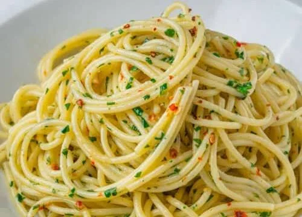

Spaghetti Aglio e Olio Recipe
Ingredients
- 200g spaghetti
- 4 cloves garlic, thinly sliced
- 1/2 cup extra virgin olive oil
- 1/4 teaspoon red pepper flakes
- Salt and black pepper to taste
- Fresh parsley, chopped
- Grated Parmesan cheese (optional)

Instructions
- Cook the spaghetti according to package instructions until al dente. Drain and set aside.
- In a large skillet, heat the olive oil over medium heat. Add the garlic and red pepper flakes, and sauté until the garlic is golden brown.
- Add the cooked spaghetti to the skillet and toss to coat with the garlic and oil mixture.
- Season with salt and black pepper to taste.
- Garnish with chopped parsley and grated Parmesan cheese if desired.
- Serve immediately.
Home Page